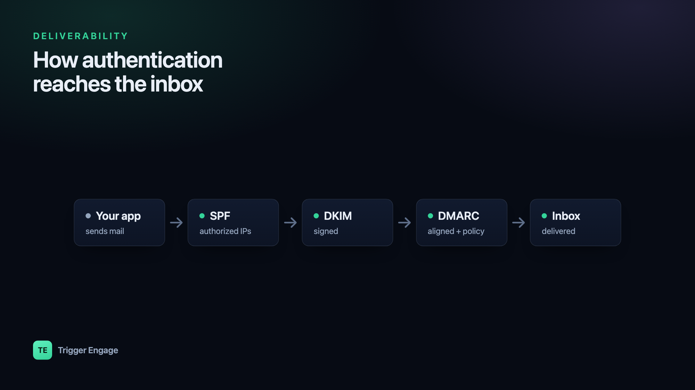

Email deliverability is the difference between a message that lands in the inbox and one that nobody ever sees. You can write the perfect onboarding sequence, but if it drops into the spam folder — or gets rejected at the door — none of that work matters. The good news for developers: most spam-folder problems are technical, and technical problems are fixable. This is the practical guide to the DNS records, reputation signals, and list habits that keep your email arriving.

What "deliverability" actually means
People use "deliverability" loosely, but there are really two separate questions. The first is delivery: did the receiving server accept the message at all, or did it bounce it back? The second is placement: once accepted, did it land in the inbox or get filed as spam? A message can be delivered and still be invisible.
Mailbox providers — Gmail, Outlook, Yahoo, Apple Mail — make the placement decision, and they make it in milliseconds using three broad inputs:
- Authentication — can they cryptographically confirm the mail really came from your domain?
- Reputation — what's the track record of your sending domain and IP address?
- Engagement — do recipients open, click, and reply, or delete and complain?
You control the first outright, influence the second over time, and earn the third with good content and clean lists. Let's take them in order.
Authenticate your mail: SPF, DKIM, DMARC
Authentication is table stakes. Without it, providers can't tell your mail from a spoofer's, and modern filters treat unauthenticated bulk mail as guilty until proven innocent. Three DNS records do the work, and they build on each other.
SPF — authorize your sending servers
Sender Policy Framework (SPF) is a published list of the servers allowed to send mail for your domain. It lives in a single TXT record at the domain root. The receiver checks the connecting server's IP against that list — usually resolved through your provider's include: — and passes or fails the message on the MAIL FROM (envelope) domain.
example.com. IN TXT "v=spf1 include:amazonses.com include:mailgun.org -all"The -all at the end is a hard fail: "if the sender isn't in this list, reject it." Prefer -all over the softer ~all once you're confident every legitimate source is included. One caveat: SPF permits at most ten DNS lookups, so don't stack endless include: entries.
DKIM — sign your mail cryptographically
DomainKeys Identified Mail (DKIM) adds a digital signature to every message. Your sending service holds a private key and signs a hash of the headers and body; you publish the matching public key in DNS under a selector. The receiver fetches the public key, verifies the signature, and confirms the message wasn't altered in transit and genuinely originated from your domain.
s1._domainkey.example.com. IN TXT "v=DKIM1; k=rsa; p=MIGfMA0GCSqGSIb3DQEB..."The s1 is the selector, so you can rotate keys or run several providers side by side, each with its own record. Your ESP generates the key pair and gives you the public half to publish — you never handle the private key yourself.
DMARC — tie it together and get reports
DMARC is the policy layer. It tells receivers what to do when a message fails authentication, and — crucially — it requires alignment: the domain in the visible From: header must match the domain validated by SPF or DKIM. That alignment check is what actually stops spoofing, because SPF and DKIM on their own validate envelope and signing domains the recipient never sees.
_dmarc.example.com. IN TXT "v=DMARC1; p=none; rua=mailto:dmarc@example.com; adkim=s; aspf=s"Roll DMARC out in stages. Start at p=none — this enforces nothing but sends you daily aggregate reports (rua) so you can see who's sending as you and confirm your legitimate streams pass. Once the reports look clean, move to p=quarantine (failing mail goes to spam), then to p=reject (failing mail is refused outright).
| Policy | What receivers do on failure | Use it when |
|---|---|---|
p=none | Nothing — deliver and report | Monitoring; discovering your real senders |
p=quarantine | Route to spam/junk | Reports are clean; ready to filter spoofers |
p=reject | Reject at SMTP time | Full confidence; maximum protection |
Since February 2024, Gmail and Yahoo require SPF, DKIM, and a DMARC record (at least p=none) from anyone sending bulk mail, along with one-click unsubscribe and a complaint rate kept under 0.3%. These are no longer nice-to-haves.
p=none for two to four weeks before enforcing. The aggregate reports almost always surface a forgotten sender — a billing system, a helpdesk, an old marketing tool — that you'll want aligned before quarantine starts filtering it.Reputation and warmup
Once you're authenticated, providers track how your domain and IP behave over time. Send wanted mail that people engage with and your reputation climbs; generate bounces and complaints and it sinks — dragging inbox placement down with it.
New sending identities start with no reputation, which filters treat with suspicion. A brand-new domain that suddenly blasts 50,000 messages looks exactly like a compromised account. So you warm up: start with a few hundred sends a day to your most engaged recipients, then roughly double the volume every few days over two to four weeks, watching bounce and complaint rates as you go.
Whether you need a dedicated IP depends on volume. Dedicated IPs give you full control of your own reputation but must be warmed and fed consistent volume — below roughly 50,000–100,000 messages a month they often perform worse than a well-managed shared pool, because there isn't enough traffic to establish a stable signal. Most senders should stay on their provider's shared IPs until volume justifies the move. Either way, consistency matters: steady daily volume reads as healthy; erratic spikes read as spam.
List hygiene
Your list is the single biggest lever on reputation, and a bad one will sink you no matter how clean your DNS is. The rules are simple and non-negotiable:
- Use confirmed opt-in. Only mail people who explicitly asked to hear from you. Never send to purchased or scraped lists — they're full of spam traps that get you blocklisted.
- Remove hard bounces immediately. A hard bounce means the address doesn't exist. Continuing to send to it signals that you don't clean your list, which is a classic spammer tell.
- Suppress complainers instantly. If someone marks you as spam, never mail them again. Wire up your provider's feedback loop so this happens automatically.
- Prune the chronically unengaged. Recipients who haven't opened anything in six months drag down your engagement average. Try a re-engagement campaign, then let the rest go.
Content and engagement
Content filters are less about magic "spam words" than they used to be, but patterns still hurt: all-caps subject lines, link shorteners, a single giant image with no text, mismatched or hidden links. Always include a plain, visible unsubscribe link — hiding it drives people to hit "report spam" instead, which is far more damaging than a quiet opt-out.
Engagement is the real currency. Opens, clicks, and replies tell providers your mail is wanted, and that feedback loops straight back into reputation. This is exactly why subject lines are worth obsessing over — a better subject lifts opens, and higher opens lift placement. It's a good candidate for A/B testing so you're optimizing on data, not hunches.
Separate your streams
Don't send password resets from the same reputation as your weekly newsletter. Transactional mail is expected and heavily engaged; marketing mail gets more complaints and unsubscribes. Mixing them lets marketing's noise pollute the reputation your critical transactional mail depends on. The fix is to split them onto separate subdomains — say mail.example.com for marketing and notify.example.com for transactional — each with its own authentication and its own reputation. Our guide on transactional vs marketing email covers where to draw the line. Triggering transactional mail directly from application events also keeps it timely and consistent, which is exactly the steady, wanted signal that builds a strong sending reputation.
Monitor it
Deliverability isn't set-and-forget; it drifts, and you want to catch it early. Watch your bounce rate (keep it under ~2%) and complaint rate (under 0.1%, and well under Gmail's 0.3% ceiling). Enroll in Google Postmaster Tools for a direct read on your domain reputation and spam rate at Gmail. Run periodic seed tests to see where you land across providers. And actually read your DMARC aggregate reports — they're the early-warning system for spoofing and for legitimate senders quietly failing alignment.
What about SMS and push?
Reputation isn't unique to email. Carriers score the sender IDs and short codes behind SMS, and push platforms track how often users disable your notifications. The same discipline applies everywhere: send wanted, well-targeted messages and honor opt-outs. This is one reason a single marketing automation platform that tracks delivery across every channel beats stitching together per-channel point tools — you see the whole picture in one place. TriggerEngage takes that approach: it's open source, self-hostable, and free, and it sends email over any SMTP provider you choose — SES, Mailgun, Postmark, and the rest — so the sending reputation you build stays entirely yours.
Frequently asked questions
Why are my emails going to spam?
What are SPF, DKIM, and DMARC?
From: address, tells receivers what to do when authentication fails, and sends you reports. You want all three — they're required for bulk senders at Gmail and Yahoo.